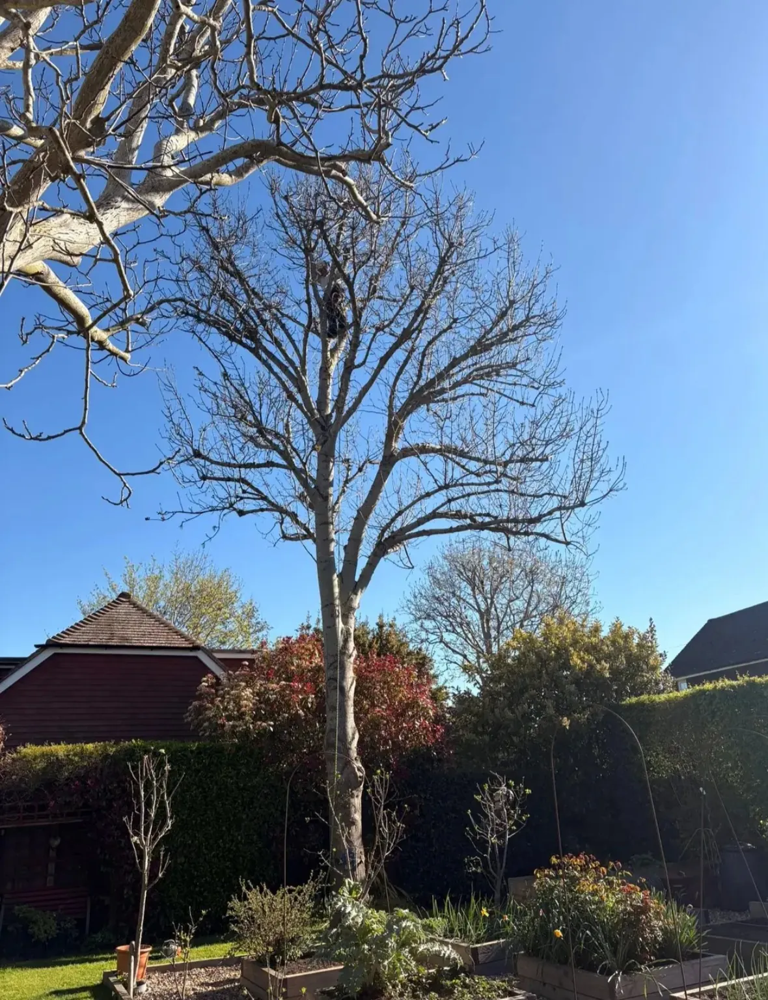
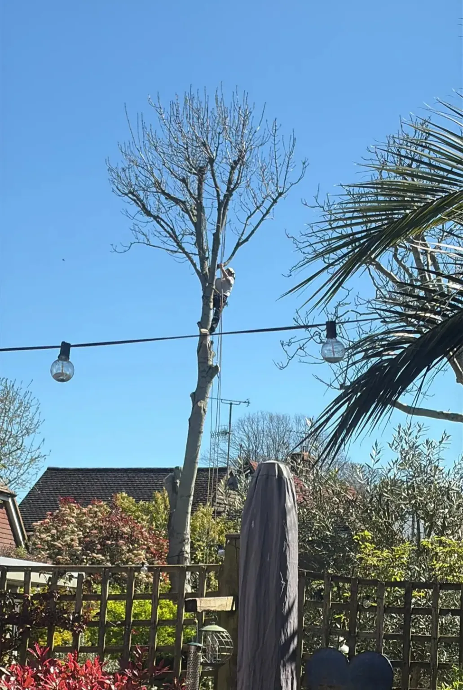
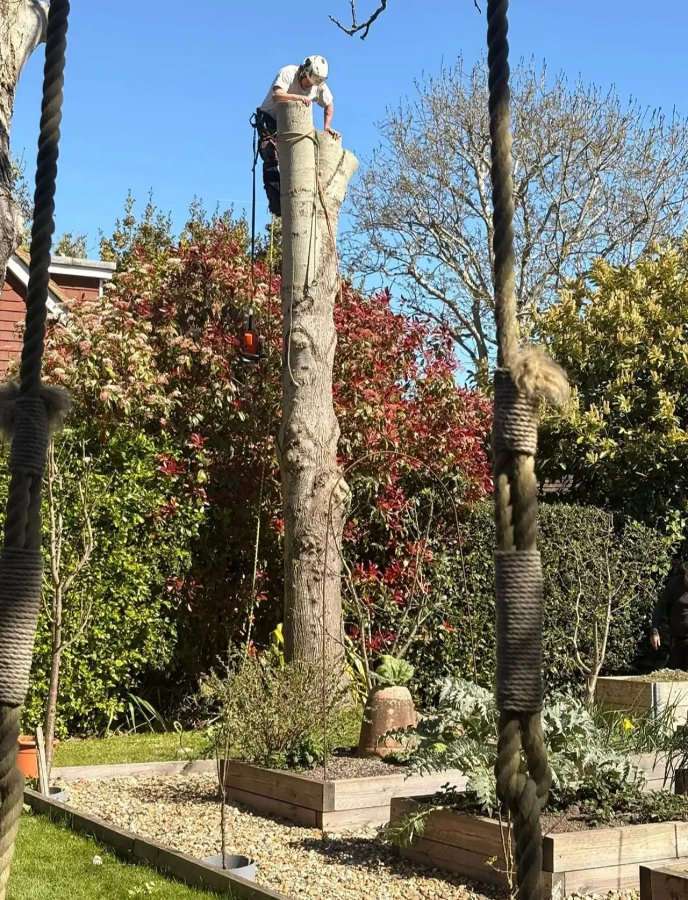
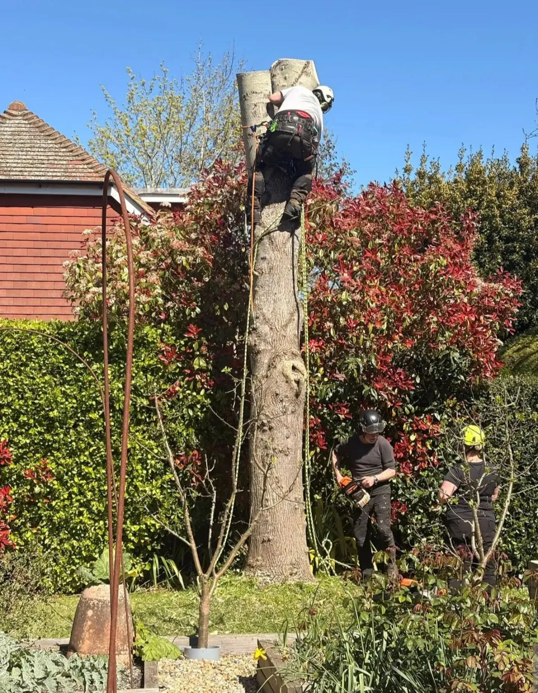
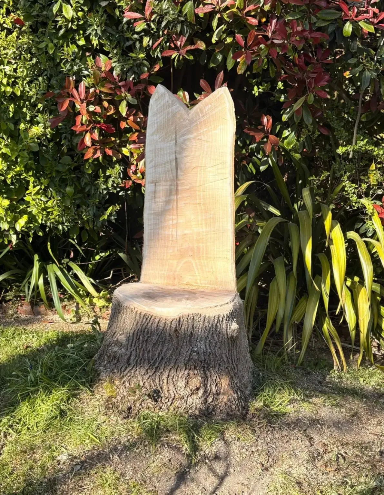

Ash dieback • Tree removal • Lewes
Ash dieback removal in Lewes
A Treevolution project completed on 8 April 2026.

About the job
Controlled ash dieback removal, with a memorable finish.
A mature ash affected by ash dieback had to be removed after becoming increasingly unstable. Treevolution dismantled the tree in controlled sections, working carefully around the garden and surrounding property.
The remaining stem was then shaped into a garden throne — the “Queen B” seat shown at the end of the gallery.
“So our big Ash tree had to come down, sadly Ash die back so would end up completely unstable. The end result a throne for, as Alastair said his ‘Queen B’. Thank you Henry Brown and gang from Treevolution for all your hard work — looks fabulous.”



